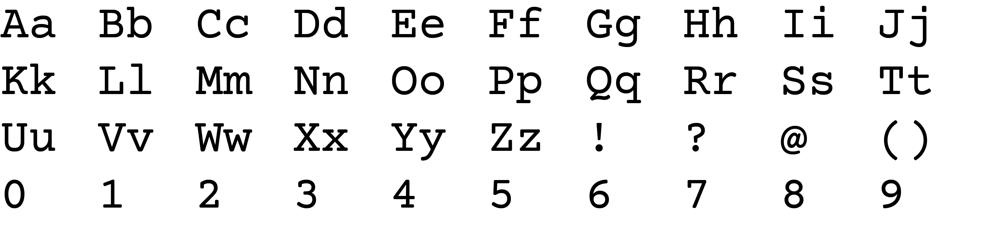
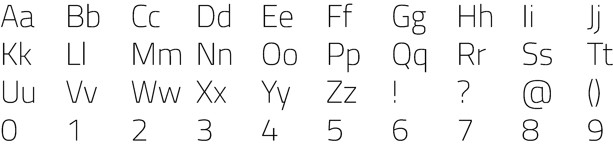

Logo
The logo is inspired by the idea of programming. The Background pattern is showing the way in which information can go from the code to give the computer a set of instructions. For the wording of the logo, I have chosen a font that resembles code, to show the theme of the website through the logo.
Primary Logo

Black and White Logo

Secondary Logo
Logo Clear Space
Typography
Primary Font
The primary font is called ‘courier prime’ which was created by Alan Dagu-greene. The font works for displaying the titles and headers for my website. The font helps support the theme of this website, as it resembles the code used in programming.
Secondary font
The secondary font ‘titillium web’ is a complementary font to the primary font. This font’s purpose is on displaying the subheadings and the body text. Compared to the primary font, it is light and simple.